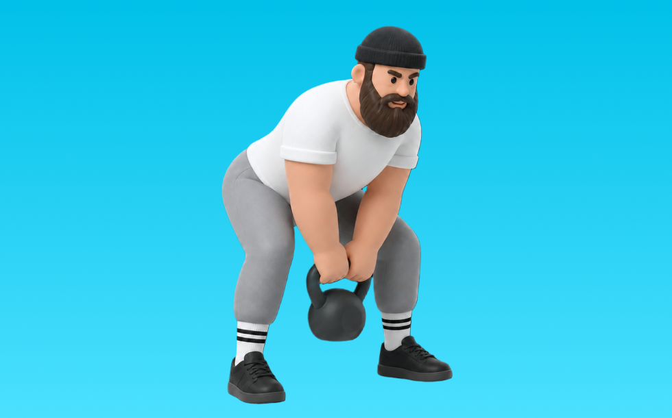

ケトルベルスイング

ケトルベルスイングとは、ケトルベルを使って「股関節で振る」動作で臀筋、ハムストリング、脊柱起立筋を鍛える種目です。腕ではなく股関節主導で行うのが特徴で、反動を抑えてコントロールしながら反復します。全身の代謝向上や運動能力アップが期待できます。
- 対象部位
- 脚
- 器具
- ケトルベル
- 記録形式
- 重量・回数
- 別名
- KBスイング
YouTube動画
-
ケトルベルスイングの正しいフォームと間違っているフォーム【初心者向け】
-
【初心者必見】『ケトルベルスイング』気をつけてほしいポイント４つ
-
【ケトルベルスイング】が習慣にする3つのコツ
-
ケトルベル スイング の効果を倍増させる ケトルベル メニュー1種目の正しいやり方
-
HIITなら『ケトルベルスイング』が最強の脂肪燃焼効果！タバタ式で効率よく引き締めよう
-
【スイングだけ】ケトルベルスイング10分間HIIT
-
ケトルベル スイング でよくある、とてももったいない例と改善方法3つ
-
はじめてのケトルベルスイング初心者やり方解説
-
【ケトルベル スイング】 これだけは知っておきたい ケトルベル スイング の基礎知識
-
【4分で分かる】ケトルベルスイングのやり方【自宅筋トレ】
-
ケトルベル片手スイング基礎編やり方
-
ケトルベルスイング片手基礎基本編
-
【ケトルベル】正しいフォームで行う5分間のスイングサーキットトレーニング
-
振るのもテクニック！ケトルベルスイング！！【パスガードフィットネス～足抜きと健康体操～】
-
トレーナーが推奨する全身を鍛える6種目のケトルベルトレーニング
-
ケトルベルトレーニング（ケトルベルスイング）の効果とダンベルとの違い Effects of kettlebell training and difference from dumbbells
-
【これだけやっとけ】ケトルベル定番トレーニングBEST10
-
なんでケトルベルスイングって良いトレーニング種目なの？？
-
ケトルベルのメリットとは？元ゴールドジムプロトレーナーが解説！
-
【最初にやるべきケトルベルスイング】絶対にこのやり方
-
【初心者向け】4種目の簡単なケトルベルトレーニング
-
ケトルベルスイングどこに効く？
-
ケトルベルスイング何kg買ったらいいですか？
-
【筋トレ】ケトルベルスウィング 解説講座 【フォーム】【初心者】
YouTubeショート
-
フォームの指摘あったからプロに聞いてくるね✊🔥#アラサーダイエット #バズれ #ダイエット #宅トレ #ケトルベル #ケトルベルトレーニング
-
【ケトルベルスイング】これをやるだけで全身運動！ #byzoomfitness #バイズーム #フィットネスをもっとオシャレに #筋トレ女子 #筋トレ #ダイエット
-
リクエスト検証企画🔥#ケトルベル #ケトルベルトレーニング #太もも痩せ #お腹痩せ #ダイエット #ダイエット記録 #筋トレ女子 #筋トレ
-
絶対やったらダメなケトルベルスイング３選
-
ケトルベルスイング
-
ケトルベル ワンハンド スイング 32kg kettlebell one hand swing
-
【絶対するな‼️】こんなケトルベルの持ち上げ方はダメ絶対！ #Shorts
-
これは気をつけたい腰を痛めるスイングの拾い方
-
【プロゴルファーのケトルベルスイング】プロゴルファーのトレーニングを公開！
-
Kettlebell Swing Tips: Master your technique #kettlebellworkouts #kettlebells
-
安全に床から片手スイング
動作方法
- 背中を中立に保ち、股関節から動き始める
- もも裏の張りを感じる位置まで下ろす
- 足裏で床を押して立ち上がる
動作ポイント
- 背中を丸めない
- 膝を伸ばしきらない
- バーや重りを体から離しすぎない
ワンポイントアドバイス
- ウォームアップで股関節と足首を動かす
- 高重量の日はセーフティ設定を確認する
目的別回数設定
目的や体力に応じた一般的な目安です。無理のない範囲で調整してください。
- 筋力アップ
- 1〜5回
- 筋肥大
- 6〜12回
- 持久力アップ
- 13〜20回
YouTube動画について
動画はYouTubeの公開情報をもとに表示しています。内容は投稿者によるもので、Biggrによる監修ではありません。
アプリを入手
筋トレやトレーニングの記録はBiggrにお任せください。今すぐ無料で使い始められます。